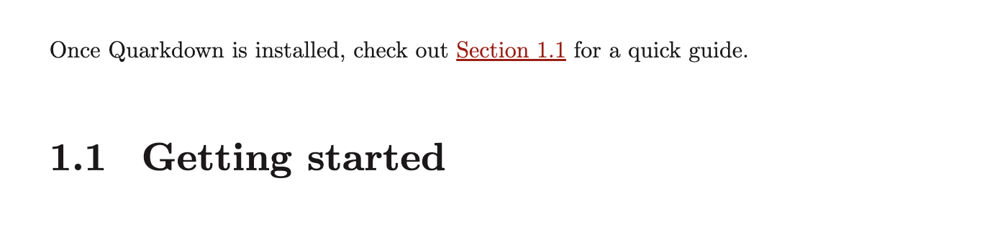
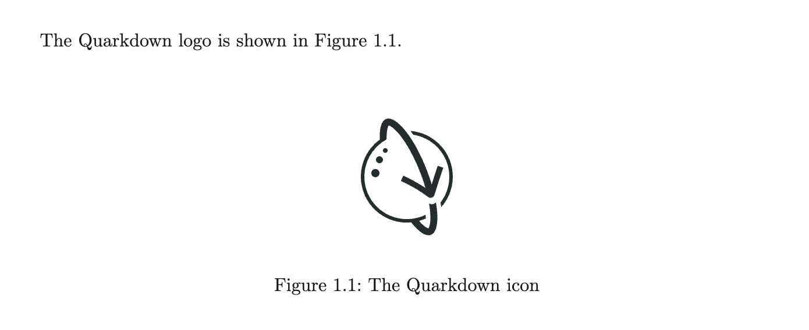
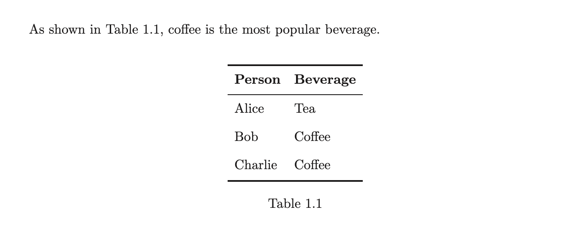
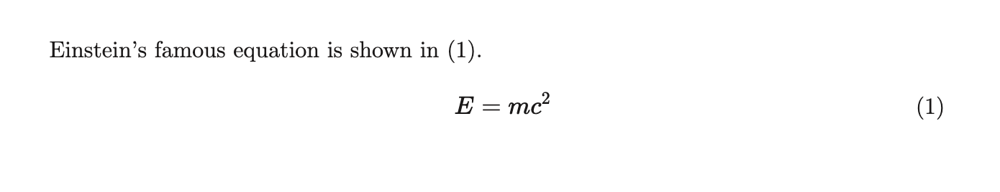
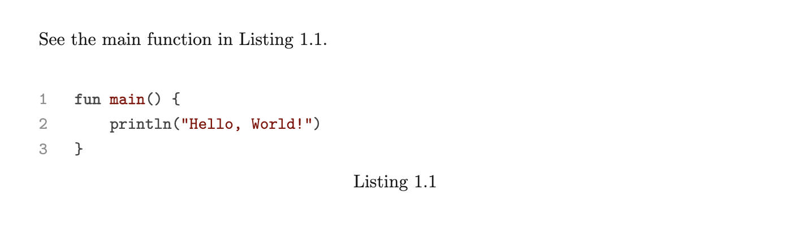
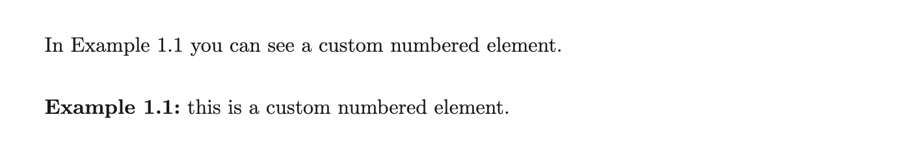

/

On this page
Cross references
In typesetting, cross-references are references to other parts of the document, such as figures, tables, sections, and equations.
In Quarkdown, you create a cross-reference using the .ref {id} function, where id is the cross-reference ID of the target element. The function can appear either before or after the target element.
Cross-referencing works best when elements are numbered, and you have set a supported document language. See Numbering and Localization for details.
You typically set the ID using the {#id} syntax. The exact location depends on the element type, as the following sections explain.
Sections
Example 1
Once you install Quarkdown, check out .ref {getting-started} for a quick guide.
## Getting started {#getting-started}
In HTML rendering, the reference ID of headings also becomes the HTML
idattribute, which makes them suitable for linking.
Figures
Example 2
The Quarkdown logo is shown in .ref {logo}.
 {#logo}
Tables
Example 3
As shown in .ref {data}, coffee is the most popular beverage.
| Person | Beverage |
|---------|----------|
| Alice | Tea |
| Bob | Coffee |
| Charlie | Coffee |
{#data}
Example 4
With a caption:
| Person | Beverage |
|---------|----------|
| Alice | Tea |
| Bob | Coffee |
| Charlie | Coffee |
"Beverage preferences" {#data}Equations
Example 5
Einstein's famous equation is shown in .ref {energy}.
$ E = mc^2 $ {#energy}
Example 6
For multi-line equations:
$$$ {#energy}
E = mc^2
$$$See TeX Formulae for more information on writing equations in Quarkdown.
Code blocks (listings)
Example 7
See the main function in .ref {main}.
```kotlin {#main}
fun main() {
println("Hello, World!")
}
```
Example 8
With a caption:
```kotlin "Hello World in Kotlin" {#main}
fun main() {
println("Hello, World!")
}
```Custom numbered elements
The
.numberedfunction is explained in detail in Numbering.
Example 9
In Example .ref {my-example} you can see a custom numbered element.
.numbered {examples} ref:{my-example}
number:
**Example .number:** this is a custom numbered element.